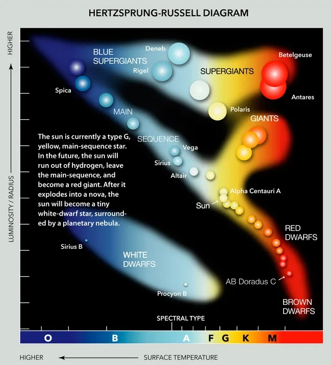
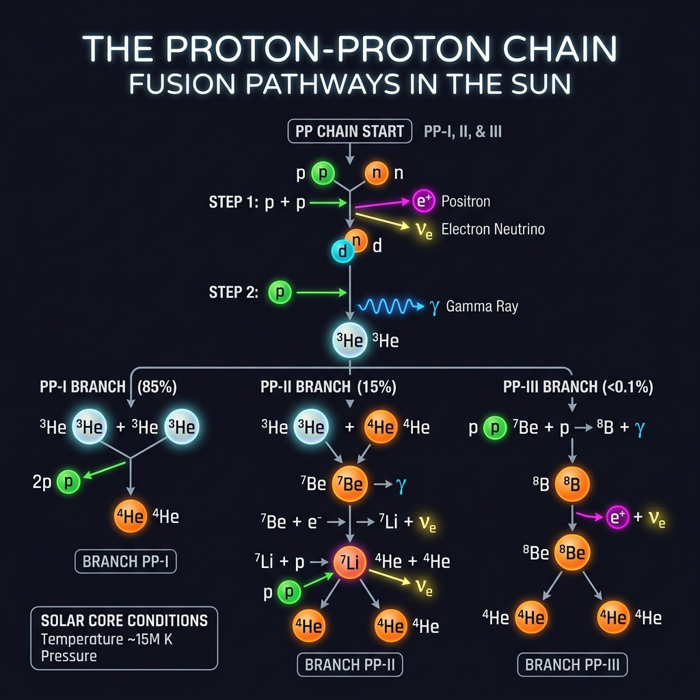
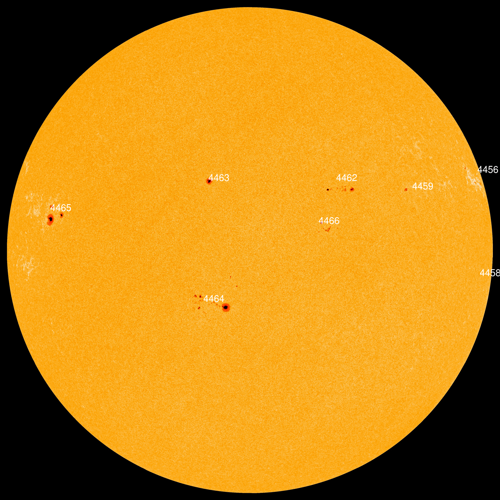

Explorem el Sol
Benvinguts, alumnes de l'Institut La Llauna de Badalona. En aquesta guia interactiva descobrirem els secrets de la nostra estrella, respondrem a les preguntes de l'observació amb telescopi i ens prepararem per als propers grans esdeveniments celestes.
Fes clic a "Següent" o utilitza el menú lateral per començar la missió d'exploració.
El Sol des de la Terra
Una vista bucòlica del Sol brillant sobre un camp verd, recordant-nos la importància de la seva radiació per a la fotosíntesi i el cicle de la vida al nostre planeta:

Tipus d'Estrelles (Classificació OBAFGKM)
Les estrelles es classifiquen segons la temperatura de la seva fotosfera i el color de la llum que emeten. Aquest sistema es coneix com la seqüència de Harvard (ordenades de més calenta a més freda):
Tipus O (Blaves)
Temperatura: > 30.000 K. Són les més calentes, massives i lluminoses de l'univers, però viuen molt pocs milions d'anys.
Tipus B (Blaves-Blanques)
Temperatura: 10.000 K - 30.000 K. Molt lluminoses. Rigel i Spica en són exemples representatius.
Tipus A (Blanques)
Temperatura: 7.500 K - 10.000 K. Siri és el principal exponent.
Tipus F (Grogues-Blanques)
Temperatura: 6.000 K - 7.500 K. Estrelles de color blanc groguenc. Proció en seria un exemple.
Tipus G (Grogues) — EL SOL
Temperatura: 5.200 K - 6.000 K. El nostre Sol és una estrella de classe G2V, ideal per a la vida.
Tipus K (Taronges)
Temperatura: 3.700 K - 5.200 K. Arcturus i Aldebaran en són exemples.
Tipus M (Vermelles)
Temperatura: < 3.700 K. Les més comunes a la Via Làctia (ex: Pròxima Centauri).
Diagrama Comparatiu de Tipus d'Estrelles

El motor del Sistema Solar
Una estrella nana groga
El Sol és una enorme esfera de plasma calent que es troba al centre del nostre sistema planetari. Classificat com una estrella de tipus espectral G2V, representa més del 99,8% de tota la massa del Sistema Solar.
Fusió Nuclear
Al seu nucli, les temperatures i pressions són tan extremes que els àtoms d'hidrogen es fusionen contínuament per formar heli. Aquest procés allibera quantitats inimaginables d'energia en forma de llum i calor que fan possible la vida a la Terra.
Itineraris de la Fusió Nuclear al Sol
Al nucli del Sol, l'hidrogen es fusiona per formar heli principalment a través de la cadena protó-protó (p-p). Depenent de les reaccions intermèdies, hi ha tres camins o itineraris possibles:

Fases Inicials Comunes (Pas 1 i 2)
Abans que la reacció es ramifiqui en els tres itineraris, la cadena comença sempre amb dos passos comuns obligatoris:
- Pas 1 (Fusió de protons): Dos protons (H-1) es fusionen creant deuteri (H-2), alliberant un positró i un neutrí.
- Pas 2 (Formació d'Heli-3): El deuteri es fusiona amb un altre protó per formar un nucli d'Heli-3 i alliberar un fotó gamma.
1. Itinerari PP-I (86% de probabilitat)
Dos nuclis d'Heli-3 es fusionen directament per formar un nucli d'Heli-4 d'alta estabilitat, alliberant dos protons lliures.
2. Itinerari PP-II (14% de probabilitat)
Un nucli d'Heli-3 es fusiona amb un Heli-4 per produir Beril·li-7, que després es transmuta en Liti-7 (per captura electrònica) i, en capturar un protó lliure, es divideix finalment en dos nuclis d'Heli-4.
3. Itinerari PP-III (0,1% de probabilitat)
El Beril·li-7 es fusiona amb un protó per formar Bor-8, el qual es desintegra en Beril·li-8 (alliberant un positró i un neutrí molt energètic) i es divideix immediatament en dos nuclis d'Heli-4.
Massa i Mida a Escala
El Sol és gegantí en comparació amb la Terra. Però, com de gran és exactament? Explora la comparació a escala real a continuació:
Massa Solar
1,989 × 1030 kg
Equivalent a unes 333.000 vegades la massa de la Terra.
Radi del Sol
696.340 km
Unes 109 vegades el radi de la Terra.
La Distància de la Terra (1 UA)
El Sol es troba a una distància mitjana de 149,6 milions de quilòmetres de la Terra. Aquesta distància s'utilitza com a patró de mesura a l'espai i rep el nom de 1 Unitat Astronòmica (UA). La llum triga aproximadament 8 minuts i 20 segons a arribar-nos al nostre planeta.
L'òrbita és el·líptica (exagerada). Com que l'eix de rotació terrestre apunta sempre cap a la mateixa direcció, al Periheli (esquerra, gener) l'hemisferi nord apunta lluny del Sol (Hivern) i 3 mesos després (a baix, equinocci de març) rep la llum perpendicularment.
Temperatura, Composició i Edat
La llum del Sol ens descobreix la seva edat, la seva energia tèrmica i de què està fet gràcies a l'espectroscòpia.
Analitzador d'Espectres del Sol
Fes clic en els elements químics per veure les seves línies d'absorció fosques a l'espectre solar:
Temperatura exterior
~ 5.500 °C
A la fotosfera. El nucli arriba a 15 milions de graus!
Edat de l'Estrella
4.600 milions d'anys
Es troba aproximadament a la meitat de la seva vida útil.
La Rotació Diferencial de l'Estrella
El Sol no és un sòlid sinó una bola de plasma fluid. Això fa que les diferents latituds girin a velocitats diferents (rotació diferencial). Mira com es desplacen les taques solars segons la seva posició:
Telemetria de Rotació
Observa el moviment de les taques. A l'equador, la matèria es mou més de pressa arrossegant el camp magnètic.
Zona Equatorial (0°)
Període: 25 dies terrestres. Velocitat lineal màxima (~2 km/s).
Latituds Mitjanes (30°)
Període: 28 dies terrestres. És la zona on neixen la majoria de taques solars.
Zones Polars (60° a 90°)
Període: Entre 30 i 36 dies terrestres. Rotació molt més lenta a prop de l'eix polar.
L'Anatomia d'una Taca Solar
Les taques solars no són taques brutes a la fotosfera, sinó zones de refredament controlades per camps magnètics molt potents. Explora aquest esquema transversal per veure què passa sota la superfície:
El camp magnètic actua de "tap"
Les línies de camp magnètic (en blau) són tan denses que tenen un efecte resistiu sobre el plasma. Impedeixen físicament que el gas calent del nucli pugi a la fotosfera, tallant la convecció.
Per què es veu fosca si està a 3.800 °C?
Una temperatura de 3.800 °C és extremadament alta (més calent que un forn industrial de metall!). Si traguéssim la taca i la poséssim sola al cel nocturn, brillaria 100 vegades més que la Lluna plena. És un simple efecte de contrast: es veu fosca al costat del plasma brillant del voltant que és molt més calent i lluminós.
Fenòmens de la Superfície Solar
A més de les taques solars, el Sol presenta una gran quantitat de fenòmens dinàmics i violents a la seva superfície provocats pel magnetisme i el plasma bullent:
🔴 Protuberàncies Solars
Gegantins bucles de plasma fred i dens que s'eleven milers de quilòmetres sobre la corona, retinguts per camps magnètics.
✨ Fàcules o Màcules
Regions brillants i molt calentes que se situen en els canals de la fotosfera. Ajuden a mantenir la lluminositat solar constant.
⚡ Fúlgures / Flamarades
Explosions sobtades i extremadament intenses d'energia que alliberen radiació de tota mena a l'espai en pocs minuts.
🫧 Grànuls i Espícules
Cel·les de convecció (grànuls) semblants a bombolles d'aigua bullent, i espícules que són columnes verticals de gas supercalent.
Esquema d'Activitat Fotosfèrica
Anatomia i Estructura del Sol
El Sol té una estructura en capes, des del nucli fins a la corona exterior. Cadascuna té unes condicions de pressió i temperatura extremes. Explora l'esquema de les seves capes i zones a continuació:

Atmosfera i Zones Solar (Detall)
Aquest segon diagrama ens descobreix detalladament l'atmosfera externa del Sol i com la temperatura comença a elevar-se sorprenentment a mesura que ens allunyem de la superfície fotosfèrica cap a la corona:

Vídeo: Erupcions de Plasma (Sun blasts)
Aquesta seqüència real capturada pels telescopis espacials SDO de la NASA ens descobreix la increïble violència de la nostra estrella, mostrant explosions de plasma massives en llum ultraviolada extrema:
Vídeo: Bucles Magnètics (Sun blasts 2)
En aquest segon vídeo s'observa en detall el comportament magnètic de la fotosfera. El plasma solar (gas ionitzat calents) queda atrapat i viatja resseguint les línies invisibles del camp magnètic solar com muntanyes russes gegants:
El Cicle Solar d'11 Anys (Cicle de Schwabe)
L'activitat magnètica del Sol no és constant, sinó que oscil·la en un cicle regular d'aproximadament 11 anys. Durant aquest període, els pols magnètics del Sol s'inverteixen, alterant la quantitat de taques i la freqüència de les tempestes solars:

Estat actual de la fotosfera solar (10 de Juny de 2026)
Aquesta imatge real obtinguda pel satèl·lit SDO (Solar Dynamics Observatory) ens mostra la fotosfera solar gairebé en temps real. Podem apreciar clarament els grans grups actius de taques solars a la seva superfície durant aquest període de màxim solar:

El Balanç d'Energia de la Terra
El Sol ens envia llum i calor. La Terra ha d'alliberar exactament la mateixa quantitat d'energia a l'espai per mantenir una temperatura stable. Mira la distribució dels fluxos d'energia (en W/m²):

El Perill de mirar el Sol directament
L'efecte lupa a la teva retina
La lent de l'ull (el cristallí) actua exactament com una lupa. Si mires el Sol directament, enfoca tota la llum i la radiació infraroja i ultraviolada en un sol punt de la teva retina.
Com que la retina no té receptors de dolor, et cremaràs els teixits sense adonar-te'n, provocant ceguesa parcial o total (retinopatia solar) en pocs segons.
Com mirar el Sol sense cremar-nos
Per observar el Sol a través d'un telescopi sense patir cap dany permanent, cal utilitzar mètodes professionals de protecció. Fes clic sobre les opcions per veure com funcionen:
Filtres de Llum Blanca
Es col·loquen davant de l'obertura gran del telescopi. Bloquegen el 99,999% de la llum solar abans que entri al tub.
Telescopis H-Alfa
Només deixen passar una longitud d'ona molt específica de la llum vermella. Permeten veure les protuberàncies i flamarades solars.
Mètode de Projecció
No es mira a través de l'ocular. La llum es projecta sobre una cartolina blanca on es pot dibuixar el disc solar de forma segura.
Selecciona un mètode de dalt per obtenir-ne més detalls.
El funcionament d'un Telescopi
El refractor: refracció de la llum
Utilitza una lent gran a l'objectiu per doblegar i enfocar la llum cap a un punt focal posterior. L'ocular amplia la imatge per al nostre ull.
El Mecanisme dels Eclipsis
La Lluna gira al voltant de la Terra en una òrbita inclinada uns 5 graus respecte a l'òrbita de la Terra al voltant del Sol. Per això, la majoria de vegades la seva ombra passa per damunt o per davall de la Terra i no tenim eclipsi cada mes. A nivell global, cada any es produeixen com a mínim 4 eclipsis (habitualment dos de Sol i dos de Lluna), tot i que en anys molt excepcionals en podem arribar a tenir fins a 7.
La Lluna passa per damunt o per davall de la Terra. L'ombra es projecta a l'espai exterior sense tocar-nos. **No hi ha eclipsi**.
Tipus d'Eclipsis Solars
Segons la distància de la Lluna a la Terra en la seva òrbita el·líptica, podem veure tres configuracions diferents:
Total
La Lluna cobreix el Sol completament. Es fa de nit en ple dia i es pot veure la corona solar.
Parcial
La Lluna només cobreix una part del disc solar. Sembla que li hagin donat una "queixada" al Sol.
Anular
La Lluna està més lluny i es veu més petita que el Sol, deixant un impressionant "anell de foc" visible.
El proper Eclipsi Total: 12 d'agost de 2026
Frec a frec del 100%!
El dimecres 12 d'agost de 2026, a última hora de la tarda (poc abans de la posta de sol), Catalunya i tota la meitat nord de la península viuran un històric eclipsi total de Sol.
A Badalona, la Lluna cobrirà el 99,8% del Sol. Per veure la totalitat al 100% i la corona solar, caldrà desplaçar-se una mica cap al sud de la província de Tarragona o cap a l'interior d'Aragó.
Joc de Seguretat de l'Eclipsi
Posa a prova els teus coneixements per saber si estàs preparat per gaudir de l'eclipsi de l'agost de 2026 amb total seguretat. Prem sobre les opcions per respondre:
Els Eclipsis en l'Antiguitat
Com que no entenien la mecànica orbital celesta, les cultures antigues creien que els eclipsis solars eren senyals de desastres imminents, enfadaments dels déus o monstres menjant-se l'estrella:
El Drac Celeste
Es creia que un drac invisible s'empassava el Sol. La gent sortia al carrer a fer soroll colpejant olles i tambors per espantar el drac i fer-lo escopir el Sol.
El llop Sköll
Segons la mitologia vikinga, el llop Sköll perseguia constantment el carro de la deessa del Sol (Sól). Durant els eclipsis, gairebé l'atrapava.
El Sol trencat
Per als maies, un eclipsi indicava que el Sol estava malalt o trencat. Creien que els dimonis de la foscor baixarien a la Terra per devorar els humans si no feien rituals.
Moltes gràcies per la vostra participació!
Heu completat amb èxit la missió d'exploració del Sol. Esperem que hàgiu après molt sobre la nostra estrella, els telescopis i com observar els eclipsis de forma completament segura per al proper 12 d'agost de 2026.
Ja teniu tots els coneixements necessaris per ser uns autèntics experts en astronomia i gaudir del proper gran esdeveniment celeste amb seguretat.